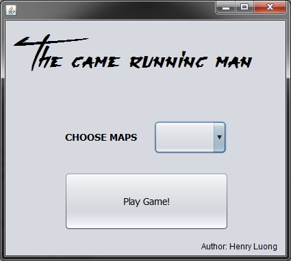
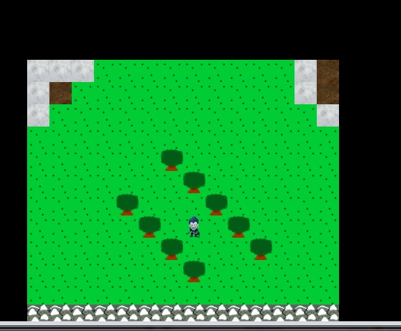
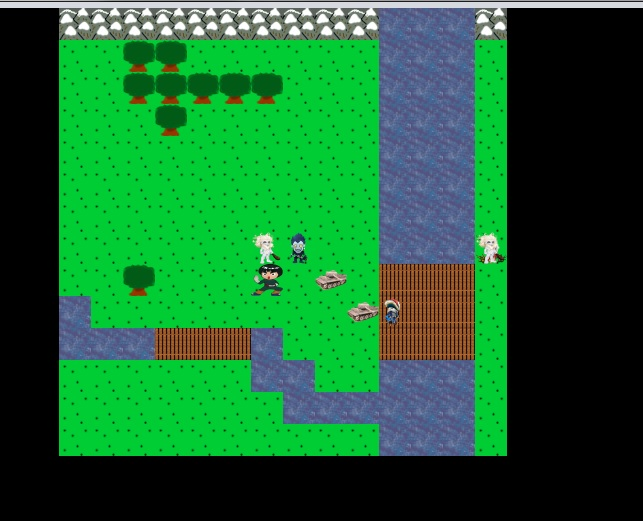

The Running man
  
Here is the click and run version of the game, download it Here
Download the zip file, unzip it and then you will see a .jar file. Double click it to start the game. Do not delete the files and folder that come with it.
Developer: Henry Luong